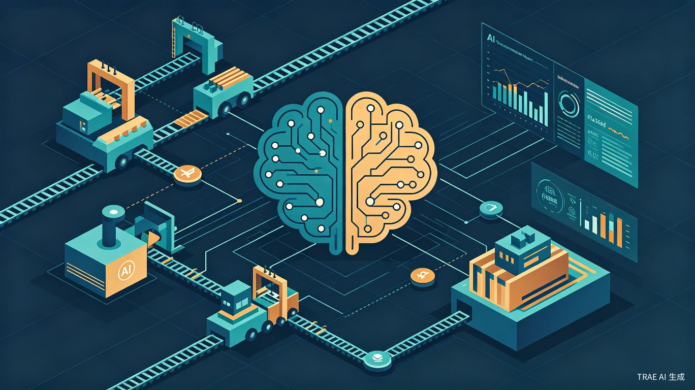

小云AI全面优化分析报告
系统短板诊断 + GitHub前沿方向对标 + 服装行业AI趋势 + 分阶段优化路线图
一、系统现状总览
小云AI经过2026年5-6月的三轮重大升级（6模块智能化 → 8大优化 → CL4R1T4S借鉴升级），已构建起一套相当完整的AI智能体系统。以下是当前系统规模：
已实现的核心能力
| 能力域 | 实现状态 | 关键组件 |
|---|---|---|
| ReAct对话循环 | 完整 | AgentLoopEngine + AiAgentOrchestrator |
| 30+ Agent工具 | 完整 | 生产/库存/交期/分析/执行 5大类 |
| 多Agent并行 | 完整 | 6专家并行 + MAS Insight注入 |
| 四层记忆系统 | 完整 | L1工作→L2短期→L3长期→L4知识图谱 |
| RAG混合检索 | 完整 | Qdrant Hybrid Search (BM25+语义) |
| 语义缓存 | 完整 | 精确SHA + 语义向量双层 |
| 自我进化 | 完整 | SelfCritic + PromptEvolution + RealTimeLearning |
| 输出质量门控 | 完整 | SelfCritiqueGate (PASS/SOFT_FAIL/HARD_FAIL) |
| MCP协议 | 完整 | SSE + REST + Resources暴露 |
| 主动洞察 | 完整 | ProactiveInsightService + 巡检推送 |
| 流式响应 | 完整 | SSE全轮次流式 + 进度百分比 |
仍缺失的能力
| 能力 | 说明 | 优先级 |
|---|---|---|
| 交期预测ML模型 | 当前用简单加权算法，非时序ML | P1 |
| 多模态识别 | 无图片/文档OCR识别能力 | P1 |
| 自然语言查询引擎 | NlQueryOrchestrator原型存在但未完成 | P1 |
| 主动执行决策 | 巡检能发现问题但不能自动修复 | P1 |
| 自动排产优化 | 无AI驱动的最优排产方案 | P2 |
| 数字孪生全链路 | DigitalTwinBuilder仅在MultiAgent流程中用 | P2 |
二、内部短板诊断（9大问题）
通过对intelligence模块的全面代码审查，发现以下关键问题，按严重程度排序：
2.1 SelfCritiqueGate 异步执行结果被丢弃 P0
这意味着花费大量精力实现的输出质量门控实际上完全没有生效。用户可能收到低质量、甚至包含幻觉的回答。
2.2 runDataTruthGuards 死代码 P0
AgentLoopEngine 中定义了完整的4路并行数据校验（DataTruthGuard + NumericConsistency + EntityFactChecker + GroundedGeneration），约60行代码，但从未被任何地方调用。数据真实性校验实际未生效。
2.3 AiAgentOrchestrator 严重超长（968行）P1
远超项目规范的Orchestrator ≤150行限制。同时承担：同步/流式执行、QuickPath、关键词路由、高级推理（ToT/GoT）、意图驱动DAG、PostTurnHooks（10+个异步Hook）、实体记忆学习、缓存管理、SSE心跳、去重等职责。
- triggerPostTurnHooks 方法约190行，10+个 postTurnExecutor.execute() 调用，大量重复 try-catch 模式
- tryQuickPath 约130行，手动拼装 system prompt（与 AiAgentPromptHelper.buildSystemPrompt 逻辑重复）
- extractKeywordDataHint 硬编码了7组关键词→表名映射
- learnEntityMemoryFromTools 直接操作 Mapper（绕过 Service 层）
2.4 AgentLoopEngine 812行 + 30个依赖注入 P1
注入了30个 @Autowired 依赖，其中15个通过 ObjectProvider 延迟加载，构造依赖图庞大。使用 ForkJoinPool.commonPool() 做异步后处理，与Java并行流共享公共池，可能互相争抢线程。
2.5 StructuredOutputEnforcer / Guardrails 结果被丢弃 P1
triggerPostTurnHooks 调用了 outputEnforcer.postProcess() 和 guardrailsConfigService.checkOutput()，但返回值从未使用——后处理结果未写回给用户，被拦截的内容仍然返回。
2.6 ProactiveInsightService Redis N+1查询 P1
getUnreadInsights 逐个 get 每条洞察，N条洞察 = N次Redis往返。buildInsightInjection 在 AgentLoop 每轮对话中都会触发全量加载。应改用 Redis pipeline/mget。
2.7 AiAgentPromptHelper 17路并发超时风险 P2
buildSystemPrompt 一次并发启动17个 CompletableFuture，每个5秒超时。线程池8-16线程、队列64。高并发时队列满触发 CallerRunsPolicy 阻塞主线程。assemblePrompt 方法有22个参数，可读性极差。
2.8 前端 GlobalAiAssistant 零测试 P2
50+个文件的前端AI组件目录，useAiChatStream、index.tsx、MessageBubble 等核心模块均无测试覆盖。SSE断线恢复不完善，对话上下文丢失后无法恢复。
2.9 架构层面：Orchestrator泛滥 + 线程池分散 P2
100+个Orchestrator缺乏统一抽象（无BaseOrchestrator接口）。四个独立线程池互不感知，缺乏统一监控和调优能力。DynamicFollowUpEngine 是孤儿组件（全代码库无调用方）。
三、GitHub前沿AI方向对标
调研了2025-2026年GitHub上最前沿的AI Agent和LLM应用方向，与小云AI进行对标分析。
3.1 AI Agent框架最新进展
| 框架 | Stars | 核心特性 | 小云对标差距 |
|---|---|---|---|
| LangGraph | 生产级首选 | DAG图编排、Plan-Execute-Verify、人-在-环、可恢复状态机 | 小云用简单ReAct循环，无图状态机、无中断恢复 |
| AutoGen 0.4 | Microsoft | 事件驱动架构、多Agent对话协作、Agent以对话对象呈现 | 小云多Agent是并行非对话式，缺Agent间协商 |
| OpenClaw | 30万+ | 长期记忆+MCP+多平台消息一体化、daily log自动记录 | 小云记忆系统更复杂但缺daily log和compaction |
| PydanticAI | Pydantic官方 | 强类型Guardrails、所有Agent输入输出类型标注、自带测试 | 小云缺类型安全的输出约束和自动测试 |
| smolagents | HuggingFace | CodeAgent模式——直接写Python代码执行，效率更高 | 小云工具调用是JSON参数模式，非代码生成 |
| Mem0 | 55k | Universal memory layer，LLM自动提取存储记忆 | 小云记忆系统更复杂但缺自动记忆提取的简洁性 |
| Cognee | 16.6k | AI Knowledge Engine，图数据库+知识图谱+向量数据库融合 | 小云有知识图谱但未与RAG深度融合 |
3.2 2026年六大关键趋势
Agent不只是写prompt，而是构建完整的上下文管理基础设施（Loop + Memory + Skill + MCP连接）。小云已具备雏形但需工程化统一。[1]
LangGraph式图编排+适度自治+明确退出条件成为生产标准。小云的ReAct循环需要升级为可控DAG。[2]
上下文/工作/会话/长期四层分离，记忆治理（准入/压缩/过期/冲突/检索）成为必备。小云已有四层但治理机制不完善。[3]
3000+ MCP Server覆盖全栈开发场景。小云已实现MCP Server但缺Client能力（调用外部MCP工具）。[4]
向量+BM25+知识图谱三驾马车混合检索成为标配，Agent自主决定检索策略。小云有Hybrid Search但缺Agentic自主检索。[5]
Mem0/Cognee/AgentMemory/Hindsight等专用记忆项目爆发。小云记忆系统组件丰富但缺统一治理。[6]
3.3 小云AI与前沿的差距热力图
四、服装行业AI应用趋势
2025-2026年服装供应链行业的AI应用正在加速，工信部等六部门印发《纺织工业数字化转型实施方案》，提出到2027年规模以上纺织企业关键业务环节全面数字化比例超70%。[7]
4.1 行业AI应用场景优先级
| 应用场景 | 技术方案 | 行业效果 | 小云现状 | 建议优先级 |
|---|---|---|---|---|
| AI视觉质检 | 5G+AI视觉，4K摄像头+CNN缺陷识别 | 0.1mm缺陷99%识别率，次品率8%→1.2%[8] | 无 | P2 |
| 需求预测+库存优化 | 多维度数据融合+LSTM/Transformer时序建模 | 库存周转天数45天→28天[9] | 无 | P1 |
| APS智能排产 | 运筹学+ML混合，弹性排产方案 | 排产1天→15分钟，交期准时率78%→95%[10] | DynamicSchedulerTool原型 | P1 |
| 工艺单/吊牌OCR | PP-OCRv4微调，服装行业专属词典 | 多国语言、价格符号、成分代码识别[11] | 无 | P1 |
| AI知识智能体 | 企业知识库+穿搭推荐+库存查询 | 单兵作战能力最大化[12] | 小云AI已有基础 | P0 深化 |
| 交期预测ML | 历史数据+供应链实时数据+LLM推理 | 多因素预测，提前预警 | 简单加权算法 | P1 |
| 数字孪生 | 3D产线建模+仿真预演瓶颈 | 交货准时率78%→95%[10] | DigitalTwinBuilder原型 | P2 |
4.2 丽晶AI Agent三大形态参考
行业标杆企业丽晶已布局三大AI智能体[12]：
| 智能体类型 | 核心功能 | 商业价值 | 小云对标 |
|---|---|---|---|
| 视觉智能体 | AI模特试衣、智能堆叠、动态视频生成 | 视觉内容成本降低70%+ | 无（非核心方向） |
| 知识智能体 | 企业知识库+穿搭推荐+库存查询+客户偏好分析 | 单兵作战能力最大化 | 小云AI已有基础，需深化 |
| 决策智能体 | 智能排产+商品配补调+面辅料供应协调 | 以销定产、柔性快反 | DynamicSchedulerTool+WhatIfSimulationTool原型 |
4.3 开源技术工具参考
| 项目 | 用途 | 与小云的结合方式 |
|---|---|---|
| JVS-APS | 开源APS排产（Spring Cloud+Vue3） | 参考排产算法，集成DynamicSchedulerTool |
| PP-OCRv4 | 轻量级OCR，吊牌/工艺单场景微调 | 新增多模态工具：工艺单识别、吊牌OCR |
| MarkItDown | Office/PDF文档转LLM可读格式 | 增强知识库导入能力 |
| LightRAG | 轻量级GraphRAG实现 | 升级现有GraphRagService |
| Sequential Thinking MCP | 结构化推理步骤外化 | 增强ThinkTool的推理能力 |
五、优化路线图（四阶段）
基于内部短板诊断和前沿方向对标，制定以下分阶段优化路线图：
第一阶段：修复失效能力（1-2周）紧急
目标：让已实现但未生效的能力真正工作起来。
| 优化项 | 具体方案 | 预期效果 |
|---|---|---|
| SelfCritiqueGate 前移 | 将Gate从异步后处理移到 cb.onAnswer 之前同步执行；HARD_FAIL时触发重试或降级回答 | 输出质量门控真正生效，拦截幻觉 |
| runDataTruthGuards 接入 | 在handleFinalAnswer中调用数据校验，或确认废弃并删除死代码 | 数据真实性校验生效，或代码库清洁 |
| StructuredOutputEnforcer 结果回写 | 将postProcess结果写回并推送给用户 | 结构化输出后处理生效 |
| Guardrails 拦截生效 | checkOutput返回拦截时，替换为安全降级回答 | 输出安全护栏真正拦截 |
| MCP租户隔离 | callTool从UserContext获取tenantId传入工具执行 | MCP调用满足P0多租户铁律 |
第二阶段：架构治理（2-3周）重要
目标：解决代码质量和架构设计问题。
| 优化项 | 具体方案 | 预期效果 |
|---|---|---|
| AiAgentOrchestrator 拆分 | QuickPath → 独立QuickPathOrchestrator；PostTurnHooks → HookChainOrchestrator；关键词路由 → KeywordRouterHelper | 主编排器从968行降至≤200行 |
| AgentLoopEngine 瘦身 | 删除死代码（runDataTruthGuards）；抽取后处理为独立Pipeline；减少依赖注入到≤15个 | 主循环从812行降至≤300行 |
| ProactiveInsightService 优化 | 改用Redis pipeline/mget；加本地Caffeine缓存（30s TTL） | N+1查询→1次批量查询 |
| 线程池统一 | 创建IntelligenceThreadPoolConfig，统一4个线程池，暴露metrics | 可观测、可调优 |
| 孤儿组件清理 | 删除DynamicFollowUpEngine、EvolutionEnginePatrolJob空壳 | 代码库清洁 |
| 前端AI测试补全 | 为useAiChatStream、index.tsx补充单元测试 | 核心前端AI逻辑有测试覆盖 |
第三阶段：能力升级（3-4周）重要
目标：借鉴前沿方向，补齐关键能力。
| 优化项 | 借鉴来源 | 具体方案 | 预期效果 |
|---|---|---|---|
| Agentic RAG | Self-RAG / Adaptive RAG | Agent自主决定是否需要额外检索；查询重写（HyDE）；多跳推理 | 检索准确率提升，减少无关检索 |
| 记忆治理升级 | Mem0 / Cognee | 记忆准入（重要性打分+语义去重）；记忆压缩（摘要合并）；记忆冲突仲裁 | 记忆质量提升，减少噪音 |
| MCP Client能力 | MCP生态3000+ Server | 小云作为MCP Client调用外部工具（Sequential Thinking、GPT Researcher等） | 能力边界大幅扩展 |
| 交期预测ML升级 | 行业趋势+LightRAG | 从简单加权→LSTM/Transformer时序模型；多因素预测 | 预测准确率显著提升 |
| 自然语言查询引擎 | NlQueryOrchestrator | 完成NL→SQL/API的完整转换链路；支持模糊查询 | 用户用自然语言查数据 |
| 主动执行决策 | 巡检+自动修复 | 巡检发现问题后自动创建任务/发送通知/执行修复 | 从"发现问题"到"解决问题" |
第四阶段：行业深化（4-6周）规划
目标：结合服装行业特色，打造差异化AI能力。
| 优化项 | 技术方案 | 预期效果 |
|---|---|---|
| 多模态：工艺单OCR | 集成PP-OCRv4/GOT-OCR 2.0，服装行业专属词典微调；新增MultiModalTool | 拍照识别工艺单/BOM表，自动录入系统 |
| 智能排产增强 | 参考JVS-APS算法；约束满足+ML混合；弹性排产方案 | 从"建议"到"可执行排产方案" |
| 知识智能体深化 | 参考丽晶知识智能体；企业知识库+穿搭推荐+库存查询 | 小云成为真正的"AI供应链顾问" |
| 数字孪生全链路 | DigitalTwinBuilder从MultiAgent流程扩展到主对话；产线仿真 | 可视化产线状态，预演瓶颈 |
| GraphRAG升级 | 参考LightRAG/HyGRAG；chunk和entity合体；多跳推理 | 知识图谱检索更深更准 |
优化路线图总览
六、总结与建议
核心发现
小云AI经过三轮重大升级，能力广度已经达到行业领先水平（30+工具、6专家并行、四层记忆、MCP协议、自我进化等），但存在"广而不深、建而不用"的核心问题：
SelfCritiqueGate（输出质量门控）、runDataTruthGuards（数据真实性校验）、StructuredOutputEnforcer（结构化输出后处理）、GuardrailsConfigService（安全护栏）——这四个精心构建的安全/质量组件全部未真正生效。用户收到的回答既未经质量审查，也未经数据校验，也未经安全拦截。
优先行动建议
- 立即修复（1-2周）：让SelfCritiqueGate和数据校验真正生效，这是AI系统可信度的基石
- 架构治理（2-3周）：拆分968行的AiAgentOrchestrator和812行的AgentLoopEngine，消除技术债务
- 能力升级（3-4周）：借鉴Agentic RAG、记忆治理、MCP Client等前沿方向，补齐关键能力
- 行业深化（4-6周）：结合服装行业特色，打造多模态识别、智能排产等差异化能力
一句话总结
优先修复失效组件，再谈前沿升级。先把"已有"做扎实，再拓展"未有"。